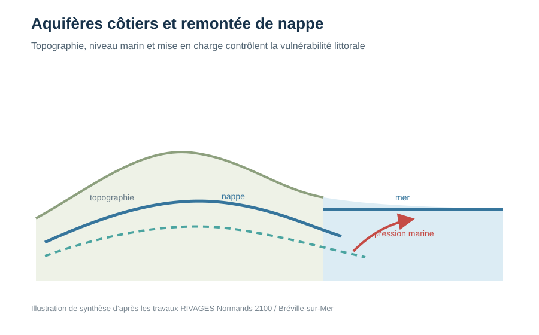

Résultats et contributions scientifiques
Cette sélection présente quelques questions qui ont structuré mes recherches, la manière dont elles ont été abordées et les principaux résultats obtenus avec mes doctorants, post-doctorants et collaborateurs. Elle complète la page Recherche, plus synthétique, et la galerie de figures, plus visuelle.
L’unité de lecture est ici le résultat scientifique, et non le projet financé. Les projets, logiciels et publications sont indiqués comme contexte et comme points d’entrée vers les sources.

Lire le sous-sol à partir des rivières
Utiliser l’extension et l’intermittence du réseau hydrographique comme information sur les propriétés hydrauliques d’aquifères peu observés.
Question, méthode, résultats →
Des temps de résidence à la fonction biogéochimique
Comprendre pourquoi le temps passé sous terre ne suffit pas à prédire le devenir des contaminants : la localisation des zones réactives compte tout autant.
Question, méthode, résultats →
Du bassin versant à l’Europe : quel modèle pour quelle question ?
Passer de modèles construits site par site à des chaînes comparables, reproductibles et capables de choisir un niveau de fidélité adapté.
Question, méthode, résultats →
Ressources en eau et changement climatique
Relier les projections climatiques aux variables réellement déterminantes pour les territoires : étiages, intermittence, stockage, alimentation en eau et nappes littorales.
Question, méthode, résultats →
Des réseaux de fractures aux propriétés émergentes
Distinguer ce qui contrôle la perméabilité moyenne de ce qui contrôle la chenalisation, le transport et la réactivité dans des milieux très hétérogènes.
Question, méthode, résultats →Des processus hydrologiques aux socio-hydrosystèmes
Le PC4 du PEPR OneWater prolonge ces travaux vers une question plus large : comment l’hydrosystème transforme-t-il une pression potentielle — prélèvement ou contamination — en exposition, effet et impact réel ? Cette direction est encore en construction ; elle est donc présentée aujourd’hui dans les projets plutôt que comme un résultat établi.